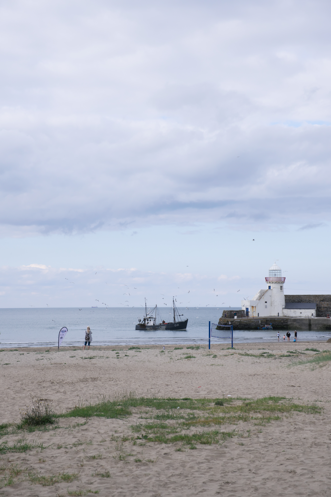

Photography
The lighthouses of Ireland
I've set myself the lofty long term goal of taking a photo that incorporates every lighthouse on the island of Ireland.

Built in 1769, Balbriggan Lighthouse was in use as a sea light until the construction of Rockabill Lighthouse in 1860.
Source: balbrigganhistory.com
Fishing boat entering the harbour by Balbriggan Lighthouse. July 2024.
Built in 1769, Balbriggan Lighthouse was in use as a sea light until the construction of Rockabill Lighthouse in 1860.
Source: balbrigganhistory.com

Reflection in a puddle of the Drogheda East lighthouse, Mornington. July 2024.
Drogheda East is one of three now inactive lights constructed in the 1880s to aid vessels entering the river Boyne.
Source: Wikipedia

Drogheda West lighthouse, Mornington, seen through a fence. August 2024.
Inactive since 2000.
Source: Wikipedia


Poolbeg Lighthouse, Dublin. August 2024.
...
Abandoned Items
People inevitably leave traces of their existence in the form of objects that end up in places they aren't typically found.


{kind=link}
{kind=link}
{kind=link}
{kind=link}
{kind=link}